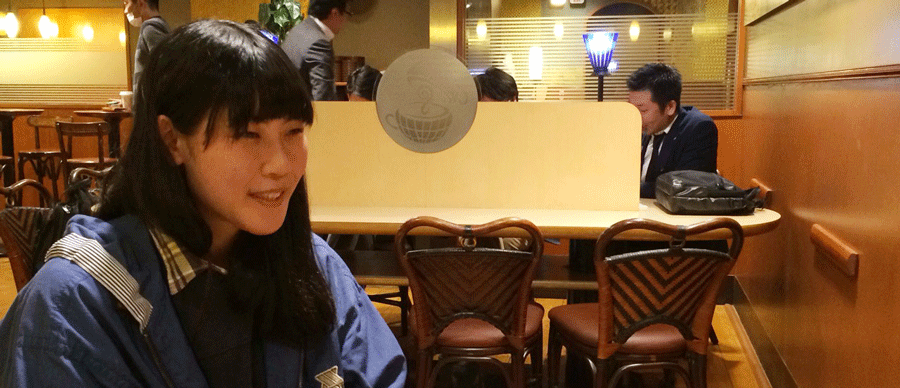
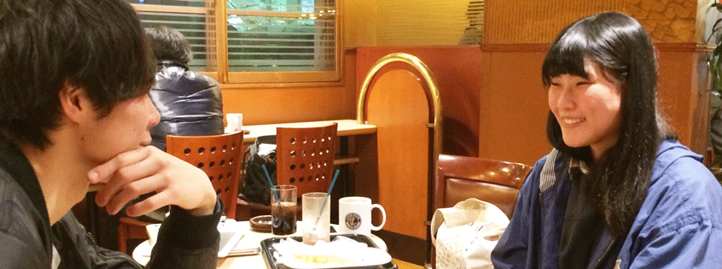
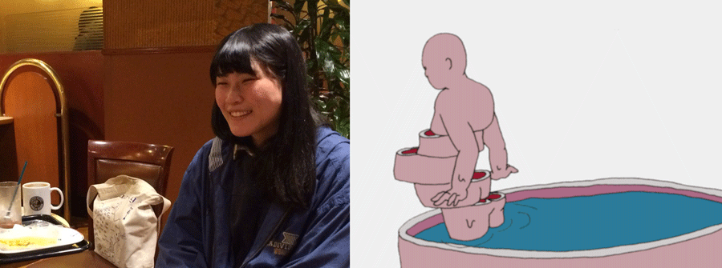
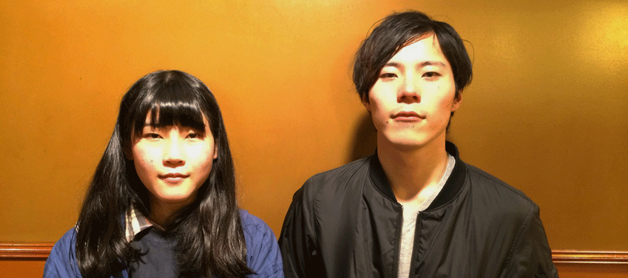
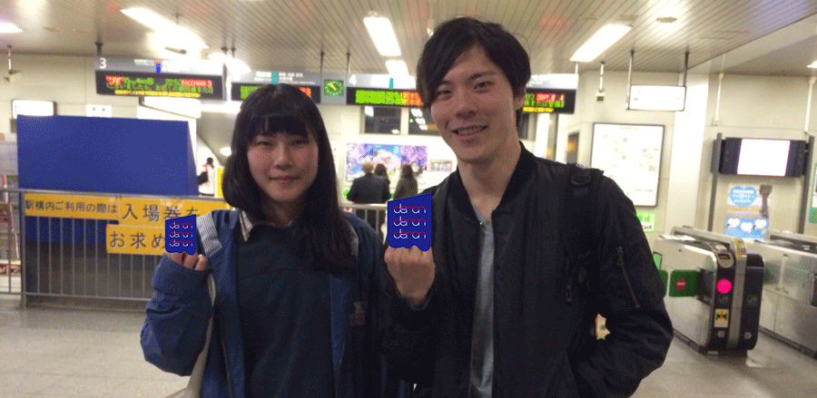

MV
LYRICS
D.E.R.O.N.
作詞・作曲 さわいかん
演奏 deronderonderon
救えないバカは興味ない
おれらなんたってすごいんじゃない
頭の中の境界線を
越えてみれば見えてくんじゃない？
D.E.R.O.N すごい D.E.R.O.N.やばい
D.E.R.O.N すごい D.E.R.O.N.やばい
監督INTERVIEW
D.E.R.O.N."MV監督
中原三貴さんとデートしてみた。
「ハリウッド映画とか面白そうだな」
澤井(以下 さ)：
今回のインタビューは、"D.E.R.O.N."MVの監督である中原三貴さんです。
武蔵野美術大学映像学科に在学中とのことですが、どうして映像の道にすすんだの？
中原(以下 な)：
あんまりキッカケは憶えていないのですが、絵を描くのが好きで、その延長でなにかできないかと思いました。
あとは、芸術系高校へ進学する際、映像の道を選んだことが分岐点でした。
さ：
じゃあ、確信的に「映像やるぞー！」というわけではなかったってことなんだ？
な：
そうですね。でも元々「ハリウッド映画のメイキングとか見て映像面白そうだな」などは思っていました。
さ：
それはなんとなく意外！笑
そこから芸術系の高校を卒業してムサビに進学してから、どういうことをし始めたの？
な：
やりたいことがまとまらず、これをやったというものはあまり無いんですが、
インスタレーションや実験映像、メディアアートとかを学んできました。
「ピグマリオン効果」というダンスチームにVJをお願いされたことがきっかけで、アニメーションを作り始めました。
さ：
タチコ(館あかね："wall off"出演)の紹介で、中原さんのポートフォリオサイトを見せてもらって、この人頭おかしいしって思って（笑)
それからderonの中で一番短くて一番頭のおかしい"D.E.R.O.N"のMVの製作をお願いした訳なんですよ。
実際完成物見た時に、「これはヤバい！！！」って盛り上がった！（笑）
な：
好き放題させていただきました（笑）
 基本的に自分が「良い」と思った物しかつくらない
さ：
では次に、deronderonderonを初めて聴いたときの印象を教えてほしいです。
な：
紹介者のタチコからsound cloudやMVを教えてもらって、それが初めてでしたね。
普段から音楽の映像制作を頼まれることがあるんですけど、基本的に自分が「良い」と思った物にしか作りたくなくて。
なんですけど、deronはカッコいい、ってビビってきて。（笑）
さ：
お、それは嬉しい！
実際”D.E.R.O.N."の歌詞って、すっごい、こう、アレだと思うんですけど、初めて聴いた時どうでした？笑
な：
映像を作ることを前提に聴いたんですけど、
「これなら何やってもいいかな」って。思ってました笑
さ：
なんだか嬉しいね。
実際に去年の7月に渋谷のグラッドのライブを見ていただいたんだけど、
あの時どうだった？？笑
な：
なんだか、すごいギラギラな人だなって・・・。
あの時、deronderonderonはステージ上に乗るべき人達なんだなという印象でした。
キラキラしてるし。(衣装が)
 発狂するくらい大変でした。
さ：
MVにフォーカスして行きたいんだけど。
全編アニメーションで手書きとのことなんですけど、一番苦労したことってなんだった？
な：
私の変なgifアニメを載せているtumblrを見てさわいさんがから声を掛けていただいたんですが、
gifみたいなループ作品を1分に当てはめると、まとまらないんじゃないかなって思ったので、
そのループをイカして、どういうアクションを、ループを、盛り込んでいけば良いかなって思いつくのが一番大変でした…。笑
発狂するくらい大変でした。〆切も近づいてきてましたしね…。
さ：
なんか個人的にあのMVを見てて、
1分という尺に何かしらのストーリーが入っていて、すごく良いなって思った。
中原さんのMVがあることで、deronderonderonにおいての新境地を開拓できたって思ったね！
で、どういうストーリーで，どうアクションを起こすか、っていうことに苦労したみたいなんだけど、
ここは見て欲しいという中原さん的な推しポイントは？
な：
人間が走る動き１つにしても、アニメーターからすれば怒られるような不自然さなんですけど、
逆にそういうところの鈍さや、おじさんがパカッと輪切りになるグロさをポップに落とし込んだというつもりがあるので、
そこの違和感というものを楽しんでいただけたらな。と思っています。
さ：
まさか肉喰ってる人の頭が割れるとは思わないよね。
普通に爆笑したもん！ループ感も気持ちいい。
そして、中原さんは本当に笑顔が素敵！！！（笑）
(左：中原さんの笑顔 右；問題のシーン) 
他の人が巻き込まれたくなるような集団になって欲しい。
さ：
最後に、「deronにこうなって欲しい。」っていう中原さんの願望ってありますか？
こうなったらいいんじゃないのかな、とかこうなってほしい！っていう
な：
私はperfumeみたいな、「自分たちが」っていうより外側から声がかかるような、
他の人が巻き込まれたくなるような集団になって欲しいと思っています。
音楽というジャンルの人たちが、
映像というジャンルや他のジャンルをどんどん巻き込んでいける形を提示するっていう存在になってほしいです。
さ：
そうか、俺は中田ヤスタカになればええんや！笑

今は漫画を描きたい
さ：
そうそう、中原さんって元々アニメが専門っていう訳じゃないよね。
な：
お話をいただいた時、丁度アニメ作りたくないときだったんですよ。
「アニメか・・・」っていう。笑
でもこのMVを作ったことによって、技術の向上や、意識の変わり方を自分で実感することができました。
さ：
本当に、何が本職なんだろうっていう程レンジが広いよね。
一緒にやっていくならどんなことでもできるんじゃないかな！って。
すっごい武器だと思ってる。尊敬しています。
な：
やりたいことが多過ぎて、そしてやってみると器用貧乏なので出来ちゃったりして。
だから何か一つ特筆したものが欲しいなって思っています。
さ：
僕もどっちかと言えば器用貧乏タイプだから、すごくわかる。
だから俺がもし中原さんをプロデュースするなら、色んな幅のものを少しづつ、少しづつ積み上げていくっていうのをさせたい…ていう俺の妄想ね。
中原さんはこれからどういう風に動いていく予定なの？
な：
私は映像を職にしていきたいと思ってます。
美大ってあんまり技術が伸びる場所じゃなくて、
やりたいことを具現化するための技術は必要なので映像製作会社で修行はしたいですね。
絵を描くのが好きで、でも自分が好きな物語を作るところにも挑戦していきたいなと思っていて、
今は漫画を描きたいと思っています。
映像もやっていきたいし、いろんなところにコミットしていきたいです。
さ：
あれもしたい、これもしたいって、やりたいことしかないって！笑
勝手にシンパシーを感じています。
これからの中原さんの活動に期待ですし、絡む気満々ですし、
どうしても僕は売れたいんですよ。僕だけがじゃなくて、逆に僕の友達を自慢したいんですよ。
がんばろう（自分へ）
これからも、何卒よろしくね。中原三貴さんでした！
な：
ありがとうございました。
(渋谷駅にて、ロックに解散) 
中原三貴
-----
1992年生まれ 埼玉県在住
武蔵野美術大学映像学科在籍中
映像を中心に創作活動を行う